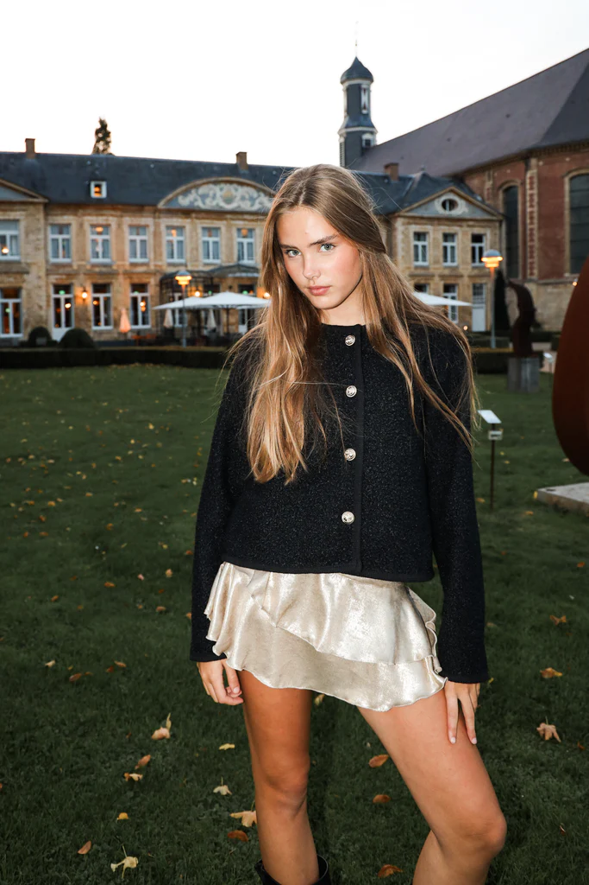
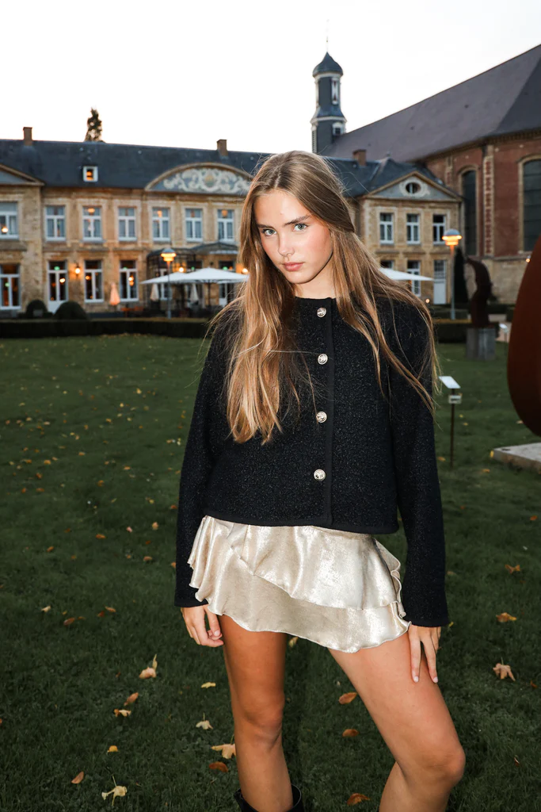
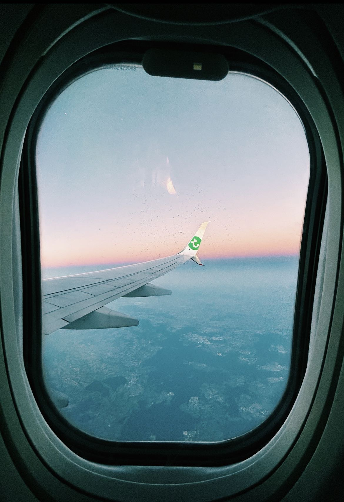

Campagne Shoots

 

Wanneer je model bent bij MMT word je weleens voor een soort tripje mee gevraagd waarin je gaat shooten, tiktoks en content over het algemeen maken. Er word veel van je verwacht wanneer je word mee gevraagd, maar goed ze vragen je natuurlijk ook voor een reden mee! Alleen de vraag nu is wat houdt zo'n trip nou in en wat kan ik verwachten en misschien een nog belangrijkere vraag is hoe maak ik me nou eigenlijk goed klaar voor zo'n champagne shoot?!

Bij campagne shoots is het altijd belangrijk dat je van te voren je je goed klaarmaakt en ervoor zorgt dat je er verschoont uitziet. Maar hoe zorg je daar nou voor? Op de vorige pagina "Belangrijke informatie" zie je de belangrijkste dingen waar je rekening mee kan houden bij een shootdag. Wanneer je jezelf wilt voorbereiden voor een campagne shoot is het van zeer belang dat je je altijd houdt aan dit lijstje + het lijstje met belangrijke dingen die je op de app opgestuurd krijgt van het team van MeetMeThere.
Soms komt het ook weleens voor dat je naar het buitenland gaat voor zo'n campagne shoot. Zo'n buitenlandse trip wordt voor jou dan betaald en je krijgt ook nog eens betaald! Super mlekker klinkt dat, maar het is ook echt enorm hard werken. Bij een buitelandse reis is het ontzettend belangrijk dat je je houdt aan je lijstje. Zo'n lijstje waar je rekening mee moet houden komt in een callsheet via de app naar jou toe. Hierin bevindt zich AL het belangrijke informatie waar je je ALTIJD aan moet houden!

En dan ben je er, eindelijk op de bestemming waar je je shoot gaat houden. Nu is er eigenlijk nog maar 1 vraag over en dat is:"Wat moet ik nou nu precies verwachten bij deze shoot?". Wat je kan verwachten bij een campagne shoot is dat je voornamelijk heel veel moet gaan switchen van outfit. Dat betekent dat je dat op allerlei plekken moet doen, want er zijn niet overal toiletten, bijvoorbeeld het strand of op een berg! Verder moet je rekening houden dat het zwaarder is dan je denkt, maar je ook heel veel ervaring krijgt!